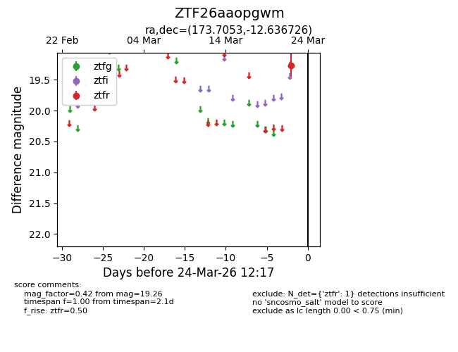
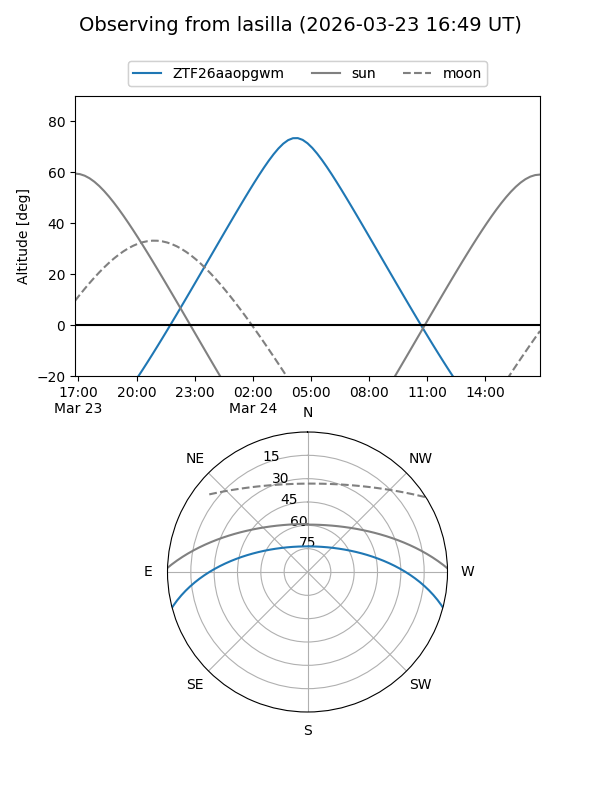
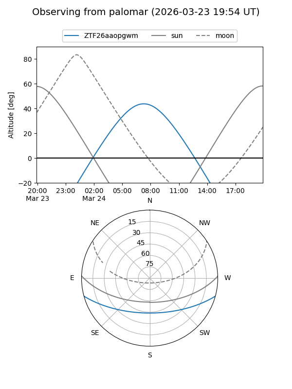

ZTF26aaopgwm
Target ZTF26aaopgwm at 2026-03-24 12:20
Aliases and brokers:
FINK: link
Lasair: link
ALeRCE: link
alt names
ZTF26aaopgwm (ztf,fink_ztf)
Coordinates:
equatorial (ra, dec) = 173.7053,-12.63673
equatorial (HMS+DMS) = 11:34:49.27,-12:38:12.21
galactic (l, b) = (275.4312,+46.10384)
Flags:
Photometry:
last ztfr=19.26
1 ztfr detections
Lightcurve

Visibility


Additional plots